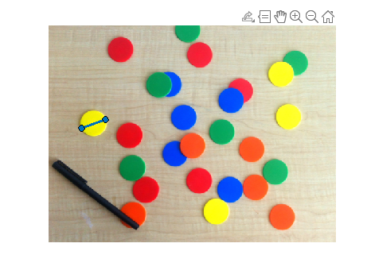

물체 검출과 오검출 평가
Load image
rgb = imread('coloredChips.png'); % MATLAB 기본 제공 이미지
imshow(rgb)
Measure the diameter of a circle
d = drawline; % figure에서 마우스를 drag
pos = d.Position;
diffPos = diff(pos);
diameter = hypot(diffPos(1),diffPos(2))
diameter = 45.8496
Grayscale
gray_image = im2gray(rgb);
imshow(gray_image)
Find circle
[centers,radii] = imfindcircles(rgb,[20 25],'ObjectPolarity', 'dark')
Control sensitivity
[centers,radii] = imfindcircles(rgb,[20 25],'ObjectPolarity', 'dark', ...
'sensitivity', 0.9)
Notify the found circles
imshow(rgb)
h = viscircles(centers,radii);
Increase sensitivity
[centers,radii] = imfindcircles(rgb,[20 25],'ObjectPolarity', 'dark', ...
'sensitivity', 0.92);
length(centers)
delete(h) % Delete previously drawn circles
h = viscircles(centers,radii);
Try another method
[centers,radii] = imfindcircles(rgb,[20 25],'ObjectPolarity', 'dark', ...
'Sensitivity', 0.92, 'Method', 'twostage');
length(centers)
delete(h)
h = viscircles(centers,radii);
For the yellow ones
[centersBright,radiiBright] = imfindcircles(rgb,[20 25], 'ObjectPolarity','bright', ...
'Sensitivity',0.92);
imshow(rgb)
hBright = viscircles(centersBright, radiiBright, 'Color', 'b');
Modify edge threshold
[centersBright,radiiBright] = imfindcircles(rgb,[20 25], 'ObjectPolarity', 'bright', ...
'Sensitivity', 0.92, 'EdgeThreshold', 0.1);
imshow(rgb)
hBright = viscircles(centersBright, radiiBright, 'Color', 'b');
Add the previous ones
h = viscircles(centers,radii);
Merge the circle lists
centers = [centers; centersBright];
radii = [radii; radiiBright];
delete(h)
h = viscircles(centers,radii);